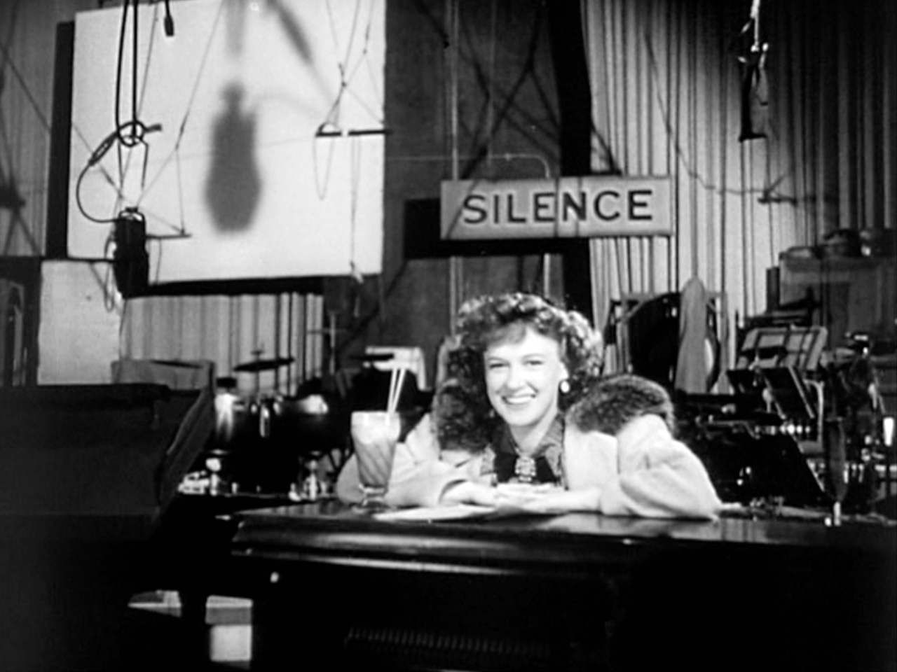

Mary Louise Comingore (August 24, 1913 – December 30, 1971), best known professionally as Dorothy Comingore, was an American film actress. She is best known for starring as Susan Alexander Kane in Citizen Kane (1941), the critically acclaimed debut film of Orson Welles. In earlier films she was credited as Linda Winters, and she had appeared on the stage as Kay Winters. Her career ended when she was caught up in the Hollywood blacklist. She declined to answer questions when she was called before the House Un-American Activities Committee in 1952.
Dorothy Comingore was discovered by Charles Chaplin when she was acting in a small playhouse in Carmel. Whether Chaplin played any role in her career is questionable. In 1938, Comingore denied being Chaplin's protégé and indicated that press reports had exaggerated the limited contact that she had with Chaplin and one of his assistants.
Comingore played bit parts in Hollywood movies until Orson Welles cast her as Susan Alexander, the second wife of press tycoon Charles Foster Kane, in his debut feature film Citizen Kane (1941). Her performance garnered rave reviews: “(She) is put through a range of emotions that would try any actress one could name,” wrote The Hollywood Reporter.

Comingore's supposed Communist connections played a role in a legal battle for custody of her two children with Richard J. Collins. She also said that her 1953 arrest on a prostitution charge was "all a part of my being an 'unfriendly witness.'"
According to Peter Bogdanovich in his DVD commentary on Citizen Kane, she impaired her subsequent career by turning down too many roles that she felt were uninteresting. She appeared in the film version of the Eugene O'Neill play The Hairy Ape (1944) with William Bendix, Susan Hayward and John Loder. Comingore's last movie appearance was in a supporting role in The Big Night (1951) starring John Drew Barrymore. Her career ended in 1951, when she was caught up in the Hollywood blacklist.
The following year she was called to appear before the House Un-American Activities Committee about her alleged Communist connections, and she declined to answer on constitutional grounds. Soon after she was accused of heavy drinking in custody hearings for her children, and on March 19, 1953, she was arrested for prostitution in West Hollywood. The arrest is believed by many to have been part of a revenge scheme by police offended by her mocking the HUAC.
Comingore was one of the contributors to Citizen Kane who were personally interviewed by Dr. Howard Suber of the UCLA School of Theater, Film and Television. His research was used by Pauline Kael for her 1971 essay, "Raising Kane". A copy of the interview is in the collection of the Lilly Library at Indiana University Bloomington.